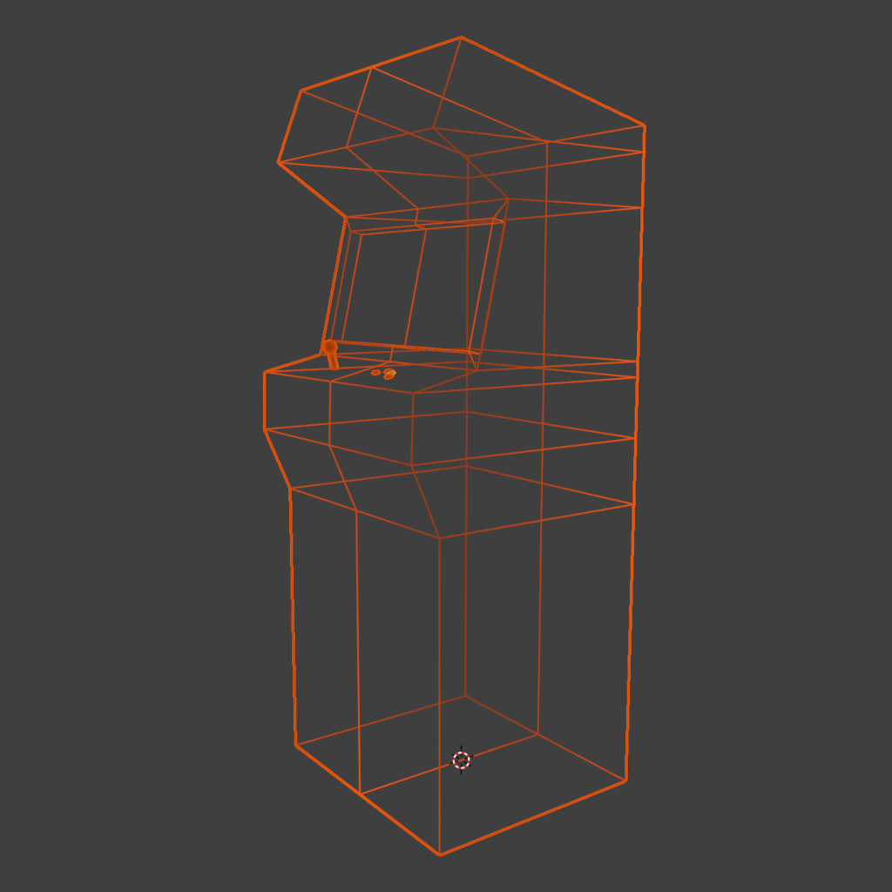
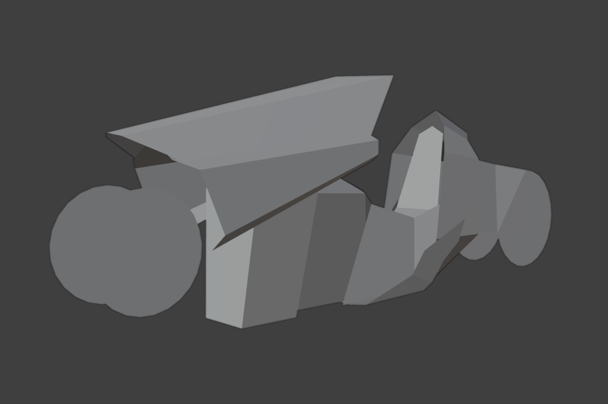

Once references have been collected, the next step is modeling.
Most of the 3D objects I modeled are complete, closed objects like the arcade cabinet:

But I also experimented with creating models that are more like origami, like the body of the bike:

It's kinda hard to make out, but it's actually made out of 10 planes, some of which are folded and overlapping each other.